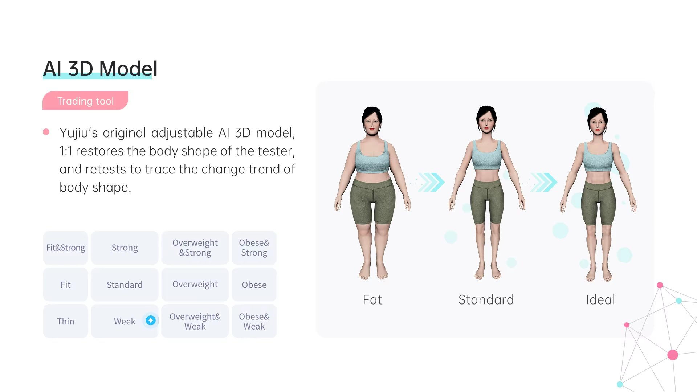

Nos massages thérapeutiques sont personnalisés selon vos besoins afin de diminuer les douleurs, améliorer votre mobilité et favoriser une récupération optimale.

Chaque séance est personnalisée afin de répondre à vos besoins spécifiques et vous aider à retrouver un meilleur confort de vie.
Réduction des tensions musculaires, des douleurs chroniques et des inconforts articulaires.
Favorise la circulation sanguine et accélère la récupération musculaire.
Apaise le système nerveux et procure une sensation durable de détente.
Aide à retrouver une meilleure amplitude de mouvement et plus de souplesse.

Idéal pour traiter une région ciblée ou pour un entretien régulier.

Une séance plus complète permettant de traiter plusieurs régions du corps et d'approfondir le travail musculaire.

Chez KinéPulse, nous croyons qu'un traitement efficace commence par une bonne évaluation.
C'est pourquoi nous offrons gratuitement une analyse corporelle 3D avec votre massage thérapeutique. Cette technologie nous permet d'obtenir une vue globale de votre posture et de mieux cibler les zones nécessitant une attention particulière.
Nous discutons de vos besoins, de vos douleurs et de vos objectifs.
Nous réalisons une analyse corporelle afin de mieux comprendre votre posture et orienter le traitement.
Le traitement est entièrement adapté à votre condition et à vos objectifs.
Vous repartez avec des recommandations afin de prolonger les bienfaits du traitement.
Sélectionnez la durée de votre massage, puis choisissez un créneau réellement disponible dans notre horaire.
✔ Analyse corporelle 3D offerte avec votre massage.
Une séance de 60 minutes est idéale pour une région spécifique, tandis que 90 minutes permettent un traitement plus complet.
Oui. Elle est offerte avec chaque massage thérapeutique chez KinéPulse.
Non. Tout le matériel nécessaire est fourni à la clinique.